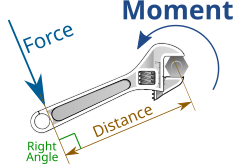
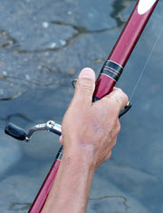
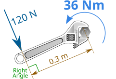
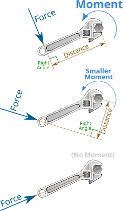
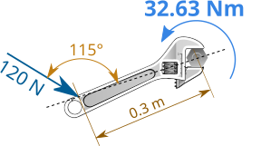
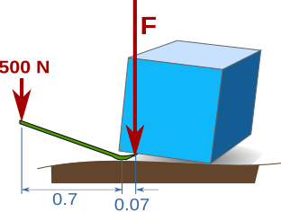
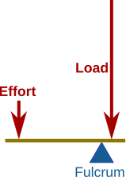
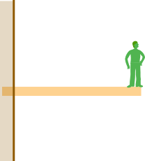
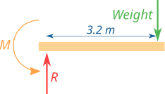

Moment or Torque
Moment, or torque, is a turning force.


You can feel moment when holding onto a fishing rod.
As well as holding up its weight you have to stop it from rotating downwards.
Example: 120 Newtons of force at 0.3 m

M = 120 N × 0.3 m = 36 Nm

At Right Angles
Remember to use the distance at right angles to the force.
A different angle and we get less moment.
And pushing directly toward the bolt produces no moment at all.
When the force is at an angle θ, we use this formula:
Moment = Force × Distance × sin(θ)
The rest of the force just pulls directly along the wrench handle without turning it.
Example (continued): 115° instead of 90°

M = 120 N × 0.3 m × sin(115°) = 32.63... Nm
Direction of Turning
Moments can turn Clockwise or Counterclockwise.
When a system is balanced (in equilibrium), the total clockwise moment equals the total counterclockwise moment.
Levers

Example: What's the Force F?
The moment from the 500 N is:
500 N × 0.7 m = 350 N m
That will equal the moment from force F:
F × 0.07 m = 350 N m
Rearrange:
F = 350 N m / 0.07 m = 5000 N
It is 10 times larger.
Levers are so important that there are names for each part: Effort, Load and Fulcrum:

Moment on a Beam
This beam is stuck into the wall (called a cantilever):

The Free Body Diagram looks like this:

The upwards force R balances the downwards Weight.
With only those two forces the beam will spin like a propeller!
But there's also a Moment that balances it out.
Example: Our guy has a mass of 80 kg, causing 785 N of force
785 N acting 3.2 m from the wall causes a moment of:
M = 785 N × 3.2 m = 2512 Nm
And that moment is what stops the beam from rotating. (Imagine the wall was poorly made, what would happen when our guy stands on the beam?)